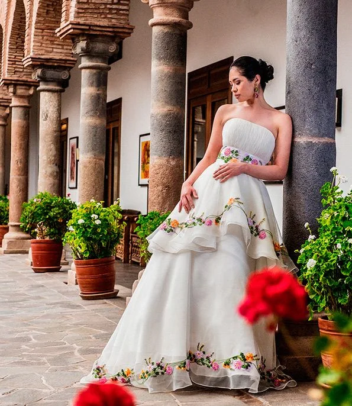
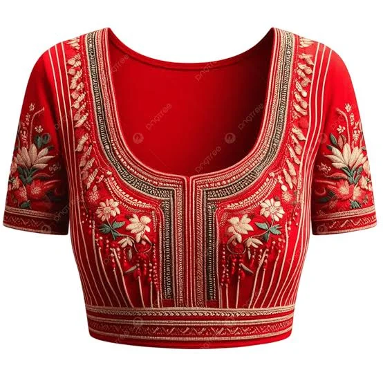
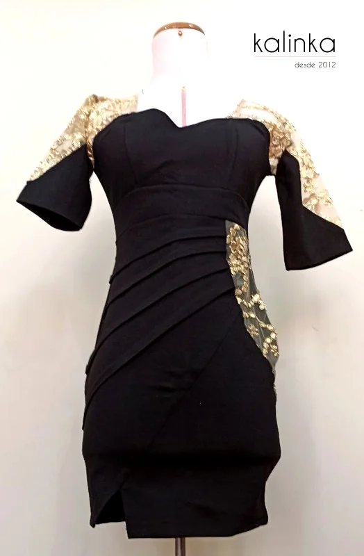
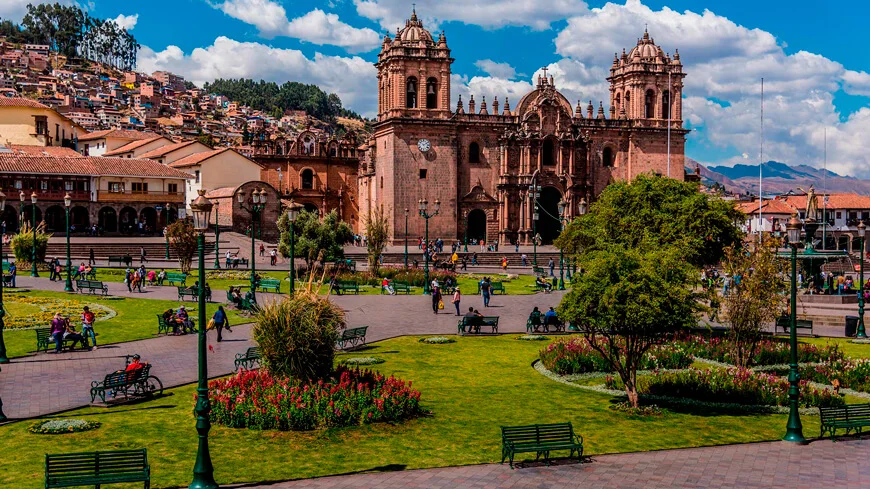

Imperial Couture
Vestidos de alta costura confeccionados a medida, con bordados en hilo de oro e intervenciones de brocados andinos.
Prendas en vicuña y baby alpaca, cortadas con sastrería europea y tejidas en telar de cintura. Piezas únicas, con certificado de origen, hechas en Perú.



Precios en soles (S/), IGV incluido. Las piezas de edición numerada se reservan por cita privada.
Vestidos de alta costura confeccionados a medida, con bordados en hilo de oro e intervenciones de brocados andinos.
Sacos, abrigos y chales elaborados en 100% fibra de vicuña y baby alpaca.
Trajes ejecutivos y de gala con forros e intervenciones inspiradas en la geometría incaica.
Asesoría personalizada de estilismo, colorimetría y diseño exclusivo en showroom privado.
Rescatar la majestuosidad de la herencia textil incaica y llevarla a la alta costura contemporánea, creando prendas exclusivas en vicuña y alpaca que fusionen elegancia internacional con identidad cultural peruana.
Posicionarse para el año 2030 como la casa de moda de lujo sostenible andina de mayor prestigio en América Latina y Europa, siendo símbolo mundial de la maestría artesanal del Perú.
Inca Atelier se fundó en 2010 en Miraflores por una dupla de diseñadores peruano-italianos con el objetivo de elevar las fibras nobles del Perú al estándar global del Haute Couture. Comenzó como un pequeño taller de sastrería fina y se convirtió en la casa de diseño predilecta de novias y personalidades destacadas de Lima.
En 2018 integró sus propias rutas de recolección de fibra ética en el sur del país, y estableció su sello de lujo con propósito.
Fundación en Miraflores. Nace el taller de sastrería fina.
París Fashion Week. Primer desfile internacional en el bloque de moda sostenible.
Premio Nacional a la Innovación Textil, otorgado por el MINCETUR.
Rutas de fibra ética. Recolección propia en el sur del país.
Showroom en Cusco. Apertura en una casona colonial del siglo XVI, en el Centro Histórico.
Licencia de la Marca País Perú por su aporte al posicionamiento internacional de la vicuña peruana.

Cusco, Centro Histórico: sede de nuestro showroom
Imperial Couture: bordados de inspiración andina
Encaje y dorado en alta costura
Tejidos de alpaca con iconografía andina
Casona colonial del siglo XVI
Monograma IA con una aguja de telar en trazo dorado.
+51 (01) 421-9080
+51 998 765 432
contacto@incaatelier.pe
atelier@incaatelier.pe
www.incaatelier.pe
@incaatelier_oficial
@IncaAtelierPeru
Inca Atelier S.A.C.